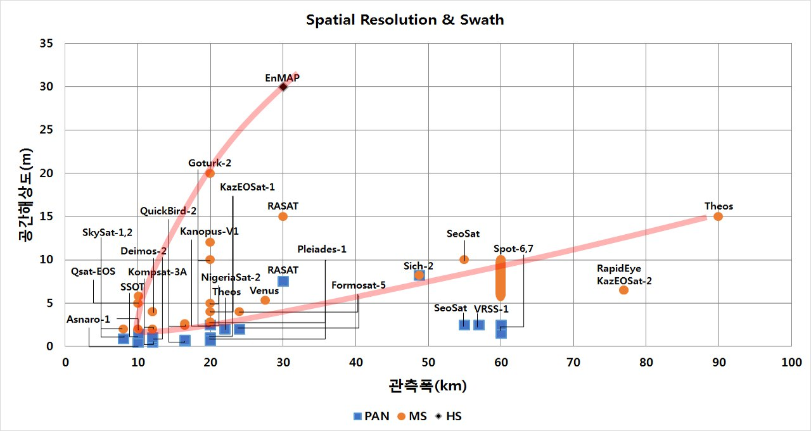

연구실적 · 국내전문학술지
농림업 중형위성 탑재체 개발을 위한 기술 사양 및 활용 분석
Analysis on Technical Specification and Application for the Medium-Satellite Payload in Agriculture and Forestry
 PDF
PDF
초록
최근 국내외에서 폭넓게 개발되어 활용되고 있는 지구관측용 위성 탑재체에 대한 개발과 연구는 영상 활용분야에서 활발하게 진행되고 있다. 또한 위성에 광학센서 및 영상 레이더 등을 장착하여 다양한 지역의 영상을 수집하고 분석함과 동시에 기반 기술들의 비약적인 발전이 이루어졌다. 국내에서 추진 중인 차세대 중형위성 개발 사업은 국내 독자기술로 탑재체를 개발할 목표에 있고 농촌진흥청, 기상청, 환경부, 국토교통부 등에서 공동으로 활용할 계획에 있다. 본 논문에서는 국내 농림업 환경에 적합한 위성 탑재체 기술사양을 제안하기 위해 위성 영상을 활용한 농림업 연구사례를 조사하여 농림업 세부 활용 분야에 따른 위성 탑재체 기술 사양을 분석하였다. 국내 위성영상 활용 전문가를 대상으로 실시한 설문 및 자문조사 결과를 바탕으로 국내외 지구관측 농림업 활용 위성의 탑재체 개발 현황, 계획 그리고 활용 등을 분석하여 독자적인 농림업 중형위성 탑재체 개발을 위한 기술사양을 제안하였다. 또한 한반도 농경지를 대상으로 위성 모의 운용실험 수행을 통해 위성 탑재체의 관측 성능을 검증하였다. 본 논문에서 제안한 결과는 향후 농림업 중형위성 탑재체 개발에 있어 적합한 사양을 제공하고 사용자들이 위성영상을 효율적으로 사용할 수 있는 방향으로서 기술적 기초 정보로 활용될 것으로 기대된다.
사이트 원문 표기
김범승 (Bumseung Kim), 김현철 (Hyeoncheol Kim), 송경민 (Kyoungmin Song), 홍석영 (Sukyoung Hong), 이우경 (Woo-Kyung Lee), “농림업 중형위성 탑재체 개발을 위한 기술 사양 및 활용 분석”, 한국위성정보통신학회논문지, 제10권 4호, 2015년